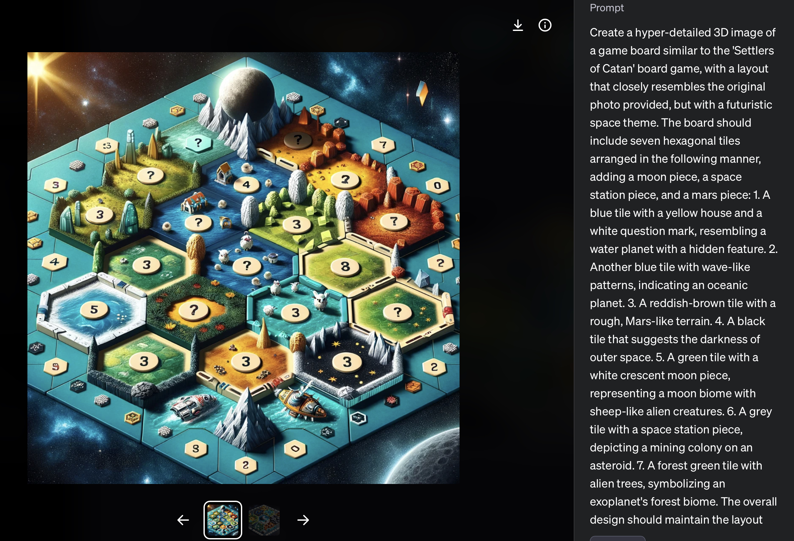

Print, paint & build your Martian board
The physical board is a hands-on lesson in additive manufacturing and game design. Download the 3D models, print the terrain, and lay out your own hex map — then generate custom AI board art to make it yours.
From STL to tabletop in four steps
Download the STL files
Grab the Martian & Lunar terrain models below. STL is the standard 3D-printing format — open it in any slicer (Cura, PrusaSlicer, Bambu Studio).
Slice & print
Import into your slicer, scale to taste, and print. Simple terrain pieces need no supports; the Dome may want a few. PLA is perfect for painting.
Paint the terrain
Rust-red for Mars, greys for the Moon, blue for water/ice. Painting is where the science sinks in — each colour maps to a resource type.
Lay out the hex map
Arrange tiles into a Catan-style hex board. Each terrain yields a different resource — see the example layouts below for inspiration.
Printable STL files
Five Martian landmarks and a habitat dome, ready to slice and print.


Generate custom board art with AI
Photograph your printed board, then use an image model (DALL·E, Firefly, NightCafe) to reimagine it with a futuristic space theme. It's a gentle introduction to prompt engineering.

Create a hyper-detailed 3D image of a game board similar to "Settlers of Catan", laid out like the photo I provide, but with a futuristic space theme. Include seven hexagonal tiles plus a moon piece, a space-station piece, and a Mars piece: 1. A blue tile with a yellow house and a white question mark — a water planet with a hidden feature. 2. A blue tile with wave patterns — an oceanic planet. 3. A reddish-brown tile with rough, Mars-like terrain. 4. A black tile — the darkness of outer space. 5. A green tile with a white crescent-moon piece — a moon biome with sheep-like aliens. 6. A grey tile with a space-station piece — an asteroid mining colony. 7. A forest-green tile with alien trees — an exoplanet forest biome. Keep the layout and tile proximity like the original photo, with added elements to enhance the space theme.
Example board layouts
Each tile's colour and shape maps to a material or function. Mix and remix — there's no single "correct" board.



Board's built — now play
Gather your crew and let an AI Space Wizard guide your first mission.
🧙 Start the role-play →